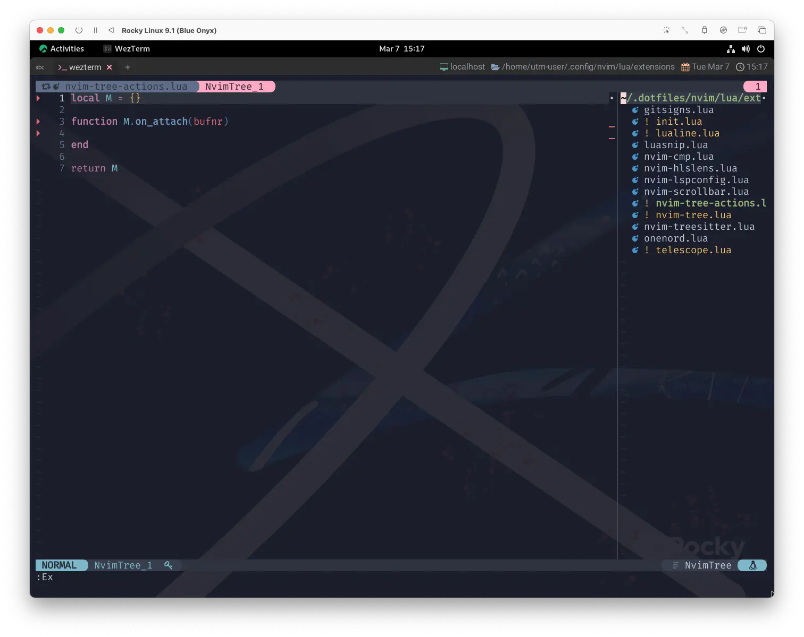
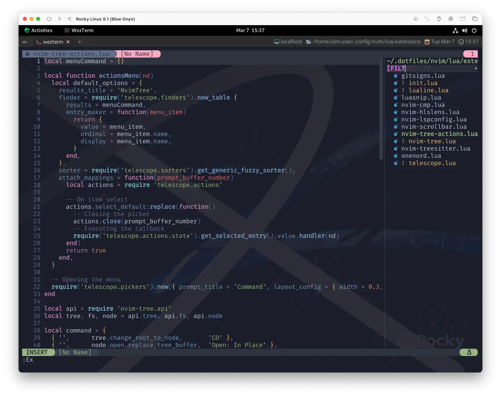
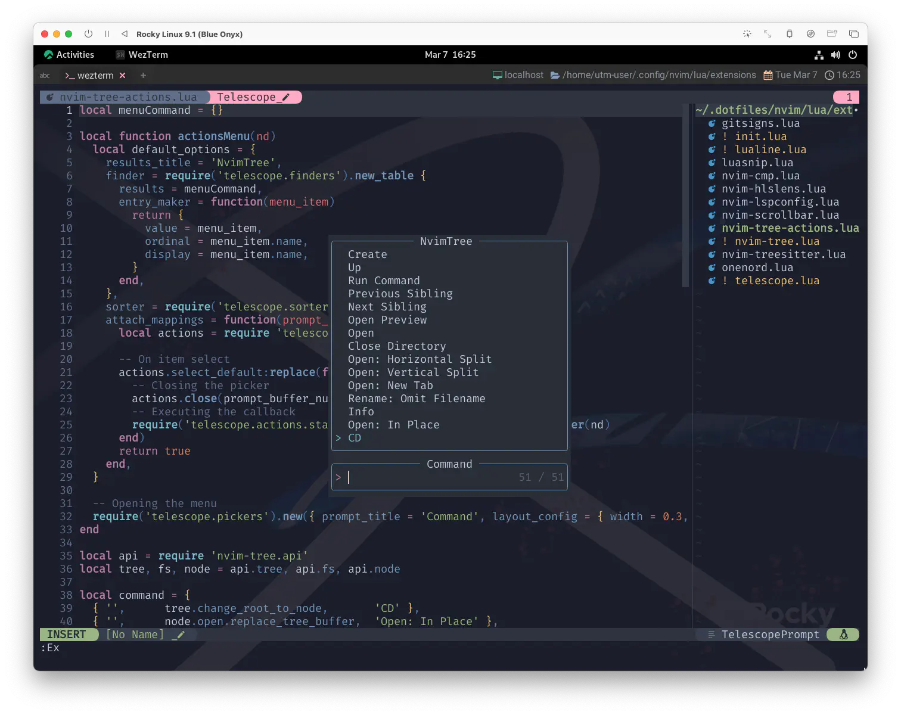

nvim-tree.lua - Actions
And when I awoke I was alone
This bird has flown
目が覚めたら 僕は一人だった
小鳥は飛び去っていたんだ
「本当に何もしてないの？」とレイコさんは僕に訊いた。
「してませんよ」
「つまんないわねえ」とレイコさんはつまらなそうに言った。
「そうですね」と僕はコーヒーをすすりながら言った。
さてさて、nvim-tree.luaの下巻です。
「昨日はどこまで話したっけ？」とレイコさんが言った。
「嵐の夜に岩つばめの巣をとりに険しい崖をのぼっていくところまでですね。」と僕は言った。
「あなたって真剣な顔して冗談言うからおかしいわねえ」とレイコさんは呆れたように言った。
Change the Settings
それでは前回のセッティングから拡張していくための準備をします。
まずは、もうすっかりお馴染みのtelescope.nvimを使うことをpackerに伝えておきましょう。
use {
'nvim-tree/nvim-tree.lua',
config = function() require 'extensions.nvim-tree' end,
- requires = 'nvim-tree/nvim-web-devicons',
+ requires = { 'nvim-tree/nvim-web-devicons', 'nvim-telescope/telescope.nvim'},
}
次項ですぐコードを載せますが、ちょっと大きいので別ファイルにしたいと思います。
無いものをrequireしてエラーを出すのも面白くないので、読み込み先をあらかじめ用意しておきましょう。
ファイル名はnvim-tree-actions.luaとしました。
local M = {}
function M.on_attach(bufnr)
-- とりあえずからっぽ〜
end
return M
これをnvim-tree.luaのon_attachに充てます。
- on_attach = 'default'
+ on_attach = require('extensions.nvim-tree-actions').on_attach,
この状態でNvimTreeを開いてみて、エラーが出ないことを確認したら、次へ進みましょう❗

Actions
で、早速nvim-tree-actions.luaをこんなんします。
もう先に全部載せちゃいますが、あとで補足します。
local menuCommand = {}
local function actionsMenu(nd)
local default_options = {
results_title = 'NvimTree',
finder = require('telescope.finders').new_table {
results = menuCommand,
entry_maker = function(menu_item)
return {
value = menu_item,
ordinal = menu_item.name,
display = menu_item.name,
}
end,
},
sorter = require('telescope.sorters').get_generic_fuzzy_sorter(),
attach_mappings = function(prompt_buffer_number)
local actions = require 'telescope.actions'
-- On item select
actions.select_default:replace(function()
-- Closing the picker
actions.close(prompt_buffer_number)
-- Executing the callback
require('telescope.actions.state').get_selected_entry().value.handler(nd)
end)
return true
end,
}
-- Opening the menu
require('telescope.pickers')
.new({ prompt_title = 'Command', layout_config = { width = 0.3, height = 0.5 } }, default_options)
:find()
end
local api = require 'nvim-tree.api'
local tree, fs, node = api.tree, api.fs, api.node
local command = {
{ '', tree.change_root_to_node, 'CD' },
{ '', node.open.replace_tree_buffer, 'Open: In Place' },
{ '', node.show_info_popup, 'Info' },
{ '', fs.rename_sub, 'Rename: Omit Filename' },
{ '', node.open.tab, 'Open: New Tab' },
{ '', node.open.vertical, 'Open: Vertical Split' },
{ '', node.open.horizontal, 'Open: Horizontal Split' },
{ '<BS>', node.navigate.parent_close, 'Close Directory' },
{ '<CR>', node.open.edit, 'Open' },
{ '<Tab>', node.open.preview, 'Open Preview' },
{ '>', node.navigate.sibling.next, 'Next Sibling' },
{ '<', node.navigate.sibling.prev, 'Previous Sibling' },
{ '.', node.run.cmd, 'Run Command' },
{ '-', tree.change_root_to_parent, 'Up' },
{ '', fs.create, 'Create' },
{ '', api.marks.bulk.move, 'Move Bookmarked' },
{ 'B', tree.toggle_no_buffer_filter, 'Toggle No Buffer' },
{ '', fs.copy.node, 'Copy' },
{ 'C', tree.toggle_git_clean_filter, 'Toggle Git Clean' },
{ '[c', node.navigate.git.prev, 'Prev Git' },
{ ']c', node.navigate.git.next, 'Next Git' },
{ '', fs.remove, 'Delete' },
{ '', fs.trash, 'Trash' },
{ 'E', tree.expand_all, 'Expand All' },
{ '', fs.rename_basename, 'Rename: Basename' },
{ ']e', node.navigate.diagnostics.next, 'Next Diagnostic' },
{ '[e', node.navigate.diagnostics.prev, 'Prev Diagnostic' },
{ 'F', api.live_filter.clear, 'Clean Filter' },
{ 'f', api.live_filter.start, 'Filter' },
{ 'g?', tree.toggle_help, 'Help' },
{ 'gy', fs.copy.absolute_path, 'Copy Absolute Path' },
{ 'H', tree.toggle_hidden_filter, 'Toggle Dotfiles' },
{ 'I', tree.toggle_gitignore_filter, 'Toggle Git Ignore' },
{ 'J', node.navigate.sibling.last, 'Last Sibling' },
{ 'K', node.navigate.sibling.first, 'First Sibling' },
{ 'm', api.marks.toggle, 'Toggle Bookmark' },
{ 'o', node.open.edit, 'Open' },
{ 'O', node.open.no_window_picker, 'Open: No Window Picker' },
{ '', fs.paste, 'Paste' },
{ 'P', node.navigate.parent, 'Parent Directory' },
{ 'q', tree.close, 'Close' },
{ 'r', fs.rename, 'Rename' },
{ 'R', tree.reload, 'Refresh' },
{ 's', node.run.system, 'Run System' },
{ 'S', tree.search_node, 'Search' },
{ 'U', tree.toggle_custom_filter, 'Toggle Hidden' },
{ 'W', tree.collapse_all, 'Collapse' },
{ '', fs.cut, 'Cut' },
{ 'y', fs.copy.filename, 'Copy Name' },
{ 'Y', fs.copy.relative_path, 'Copy Relative Path' },
--{ '<2-LeftMouse>', node.open.edit, 'Open' },
{ '<Space>', actionsMenu, 'Command' },
}
local function createTreeActions()
for _, cmd in pairs(command) do
table.insert(menuCommand, { name = cmd[3], handler = cmd[2] })
end
end
createTreeActions()
local M = {}
function M.on_attach(bufnr)
local opts = function(desc)
return { desc = 'nvim-tree: ' .. desc, buffer = bufnr, nowait = true }
end
for _, cmd in pairs(command) do
if (string.len(cmd[1]) > 0) then
vim.keymap.set('n', cmd[1], cmd[2], opts(cmd[3]))
end
end
end
return M
keymap
キーマップを定義しているのは
local command
です。
コマンドに使用できるAPIは以下を参照。
Nvim-tree's public API can be used to access features.
Nvim-treeの公開APIを使用して、機能にアクセスすることができます。
This module exposes stable functionalities, it is advised to use this in order
to avoid breaking configurations due to internal breaking changes.
このモジュールは、安定した機能を公開するものです。
を使用することで、内部のブレークチェンジによる構成のブレークを回避することができます。
The api is separated in multiple modules, which can be accessed with
`api.<module>.<function>`
apiは複数のモジュールに分かれており、アクセスするには
`api.<module>.<function>` とする。
Filterを例にとってみると
| [1] | [2] | [3] |
|---|---|---|
| 'f' | api.live_filter.start | 'Filter' |
となってます。
それをM.on_attachの中で取得してループをぐるぐるしてvim.keymap.setに順番に入れてます。
オリジナリティーを発揮しているのは、キー定義(インデックス 1)が空っぽだったらスキップするっていう程度でしょうか。
function M.on_attach(bufnr)
local opts = function(desc)
return { desc = 'nvim-tree: ' .. desc, buffer = bufnr, nowait = true }
end
for _, cmd in pairs(command) do
if (string.len(cmd[1]) > 0) then
vim.keymap.set('n', cmd[1], cmd[2], opts(cmd[3]))
end
end
end
optsのあたりはnvim-tree.luaがオフィシャルに示しているコードほぼそのままです。
This function runs when the nvim-tree buffer is created.
この関数は、nvim-treeバッファが作成されるときに実行されます。
まずはベーシックなキーマッピングを確認してみましょう。 全部確認するのは大変なので、「1個動けば 2個も 100個も一緒でしょ❓😮」の理屈で行きます。
Filterを動かしてみましょう。NvimTreeにフォーカスしている状態で f をぽちっと😆

"FILTER" の入力欄が現れましたね。ちゃんと動いてます😉
はい、じゃあ次❗どんどん行かないとまた長くなっちゃうんで❗
Recipes
最初の方にあるactionsMenuについては、nvim-tree.luaのwikiで公開されているコードを好き勝手やらせてもらってます😅
わたしが下手に説明するよりはコードを読み解いてもらった方が良いのですが、
大まかにはcommandの内容を利用して別でmenuCommandを作って...
local menuCommand = {}
local function createTreeActions()
for _, cmd in pairs(command) do
table.insert(menuCommand, { name = cmd[3], handler = cmd[2] })
end
end
createTreeActions()
Space が押されるとactionsMenuを呼び出して...
{ '<Space>', actionsMenu, 'Command' },
telescope.findersに対してmenuCommandテーブルを作成・表示するんですね。
local function actionsMenu(nd)
local default_options = {
results_title = 'NvimTree',
finder = require('telescope.finders').new_table {
results = menuCommand,
-- (以下略)
じゃあ、これも前節と同じ要領で Space をぽちっと😆
こんなん出ました❗ 
もうtelescopeの操作説明は不要ですね。項目を選べばちゃんと登録された内容が実行されます☺️
Mouse Using
最後にもう一個だけ。local commandの中にこんなのがいましたね。
{ '<2-LeftMouse>', node.open.edit, 'Open' },
わたしはコメントアウトしちゃってるんですが、 これを有効にするとダブルクリック (とか、ダブルタップとか) でファイルを開くことができます。
Double, triple and quadruple clicks are supported when the GUI is active, for
Win32 and for an xterm. For selecting text, extra clicks extend the
selection:
GUIがアクティブなときに、ダブルクリック、トリプルクリック、クアドラプルクリックがサポートされています。
Win32とxterm用です。 テキストを選択する場合、更にクリックすることで選択範囲を広げることができます。
click select ~
double word or % match <2-LeftMouse>
triple line <3-LeftMouse>
quadruple rectangular block <4-LeftMouse>
もしこの辺りを追及していくのであれば、以下を足掛かりにしていくと良いかもしれません。
( ...The End ? )
いや〜...、それで締めると BAD END みたいになっちゃうんで...😿
The End !!
スチュワーデスがやってきて、僕の隣りに腰を下ろし、もう大丈夫かと訊ねた。
「大丈夫です、ありがとう。ちょっと哀しくなっただけだから。 (It's all right now, thank you. I only felt lonely, you know.)」
と僕は言って微笑んだ。
「Well, I feel same way, same thing, one in a while. I know what you mean. (そういうこと私にもときどきありますよ。よくわかります)」
彼女はそう言って首を振り、席から立ち上がってとても素敵な笑顔を僕に向けてくれた。
「I hope you'll have a nice trip. Auf Wiedersehen! (よい御旅行を。さようなら)」
「Auf Wiedersehen!」と僕も言った。
1: Paul McCartney は曲の最後の節についてコメントをしている。 「僕らの考えでは、あの男は何らかの復讐をしなければならなかった。 "暖を取るために火をつけた" という意味でもよかったし、"彼女の家の装飾は素晴らしかった" で終わっても良かった。 でもそうじゃなくて、復讐のためにクソみたいな場所を燃やして、それをそのままにして楽器屋に行ったってことなんだ」 en.wikipedia.orgより
2: とは書いてはみたものの、間に合わなくても堪忍して...。